总体说明
本文根据正点原子《手把手教你学 STM32》系列课件整理，介绍 STM32F429 寄存器版本 MDK 工程的完整建立流程：不依赖 HAL 库与标准外设库，直接基于寄存器定义搭建工程框架。全文分为四部分：新建工程前的准备工作、新建工程步骤、下载验证与课堂总结。
1 新建工程前的准备工作
在正式新建工程之前，需要完成两项准备工作（了解级别即可）。
1，下载相关 STM32Cube 官方固件包（F1/F4/F7/H7），有两种获取方式：
方式一：ST 官网搜索 STM32Cube 下载；
方式二：开发板 A 盘资料：A 盘→8，STM32 参考资料→1，STM32CubeXX 固件包。
2，搭建开发环境：请参考"搭建开发环境"相关视频，此处不再赘述。
2 新建寄存器版本MDK工程步骤
新建寄存器版本 MDK 工程的简要步骤（熟悉级别）：①新建工程文件夹（D/M/O/P/U 共 5 个文件夹）→ ②新建工程框架（工程命名、选芯片）→ ③添加文件（建分组、添加 .s 与 .c 文件）→ ④魔术棒设置（T/O/L/C/D/U 共 6 个选项卡）→ ⑤添加 main.c 编写自己的代码。
新建工程过程可参考：A 盘→4，程序源码→2，标准例程-HAL 库版本→实验0 基础入门实验→实验0-2，新建工程实验-寄存器版本。
2.1 新建工程文件夹
在桌面新建一个工程根目录文件夹，并在该文件夹里新建 D/M/O/P/U 五个文件夹：
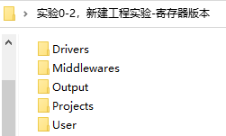
| 文件夹名称 | 作用 |
|---|---|
| Drivers | 存放与硬件相关的驱动层文件 |
| Middlewares | 存放正点原子提供的中间层组件文件和第三方中间层文件 |
| Output | 存放工程编译输出文件 |
| Projects | 存放 MDK 工程文件 |
| User | 存放 HAL 库用户配置文件、main.c、中断处理文件，以及分散加载文件 |
其中 Drivers 文件夹下再新建 3 个子文件夹，用于分类存放工程相关文件：
| 文件夹名称 | 作用 |
|---|---|
| BSP | 存放开发板板级支持包驱动代码，如各种外设驱动 |
| CMSIS | 存放 CMSIS 底层代码，如启动文件（.s 文件）等 |
| SYSTEM | 存放正点原子系统级核心驱动代码，如 sys.c、delay.c 和 usart.c 等 |
Middlewares 文件夹：存放正点原子和其他第三方提供的中间层代码（组件/Lib 等），如 USMART、MALLOC、TEXT、FATFS、USB、LWIP、各种 OS、各种 GUI 等。
Output 文件夹：存放编译器编译工程输出的中间文件，比如 .hex、.bin、.o 文件等。
Projects 文件夹：存放编译器（MDK、IAR 等）工程文件。我们主要用 MDK，为了方便区分，在该文件夹下新建 MDK-ARM 文件夹，用于存放 MDK 的工程文件。
User 文件夹：存放用户编写的代码，如 main.c 等。
2.2 新建一个工程框架
新建工程框架共四个步骤：1，新建工程 → 2，保存工程 → 3，选择主控型号 → 4，删除文件夹。
保存工程时，工程名可根据喜好命名（下图为示例工程 LED-REG），保存在工程根目录文件夹下：
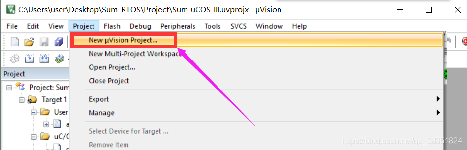
选择主控型号：根据开发板 CPU 的具体型号选择，F429 选 STM32F429IGTx。如果列表中没有想要的 CPU 型号、或者一个型号都没有，说明 KEIL5 没有添加 device 库——KEIL5 不像 KEIL4 自带很多 MCU 型号，需要自己安装器件支持包：
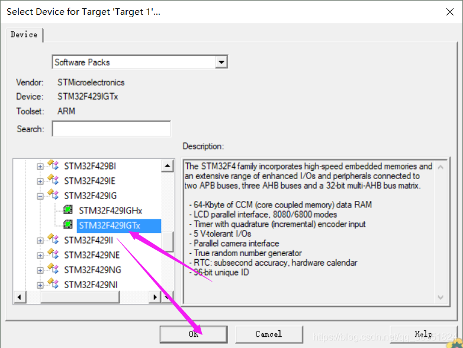
选好型号后会弹出在线添加库文件窗口（Manage Run-Time Environment）：使用寄存器控制 STM32 时不依赖任何库，直接关闭该窗口即可：
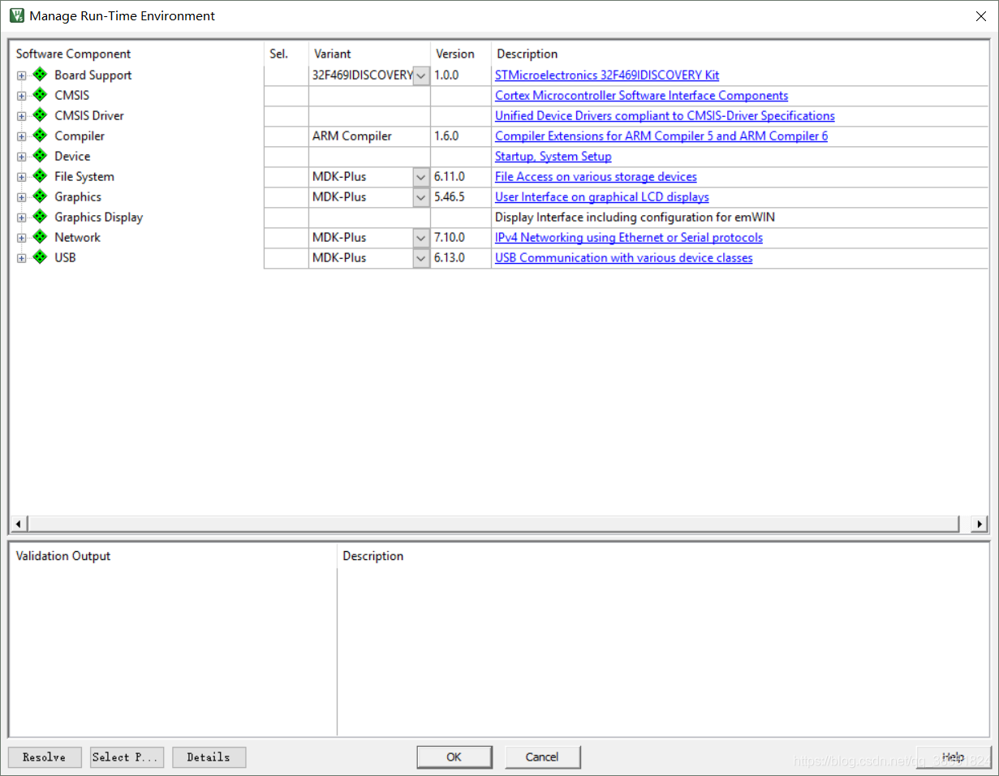
工程保存后，MDK 会在工程目录（MDK-ARM 文件夹）下自动生成 3 个文件夹：
| 文件夹名称 | 作用 |
|---|---|
| DebugConfig | 用于存放调试设置信息文件（.dbgconf），不可删除！ |
| Listings | 用于存放编译过程产生的链接列表等文件 |
| Objects | 用于存放编译过程产生的调试信息、.hex、预览、.lib 文件等 |
2.3 添加文件
工程名：Template；分组名：Startup、User、Drivers/SYSTEM、Readme。添加文件步骤：
1，设置工程名和分组名 → 2，添加启动文件 → 3，添加 SYSTEM 源码。
以寄存器版最小工程为例，需要添加/新建的三个关键文件：
| 文件 | 说明 |
|---|---|
| startup_stm32f429_439xx.s | 启动文件，系统上电后第一个运行的程序，由汇编编写，从官方固件库拷贝（路径：STM32F4xx_DSP_StdPeriph_Lib_V1.8.0\Libraries\CMSIS\Device\ST\STM32F4xx\Source\Templates\arm） |
| stm32f4xx.h | 用户手动新建，用于存放寄存器映射的代码，暂时为空 |
| main.c | 用户手动新建，用于存放 main 函数，暂时为空 |
添加方法：在工程分组上双击（或右键选择 Add Existing Files），从本地建好的工程文件夹下选择文件即可：
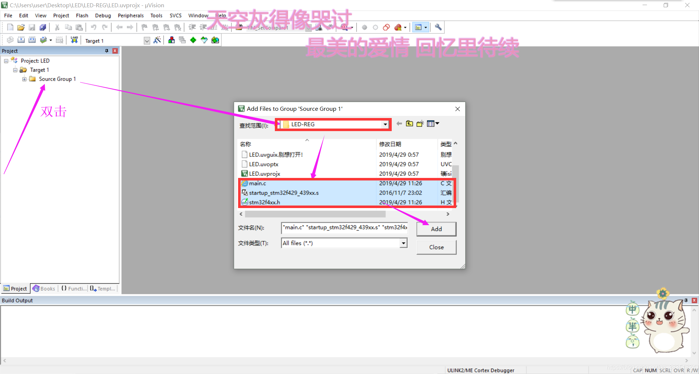
2.4 魔术棒设置
点击魔术棒（Options for Target）打开工程设置，共 7 个选项卡需要按需设置：
| 选项卡 | 设置内容 |
|---|---|
| Target | 设置使用的编译器版本、外部晶振频率 |
| Output | 设置 Objects 输出文件夹、生成 .hex 文件、输出浏览信息 |
| Listing | 设置 Listing 输出文件夹 |
| C/C++ | 设置全局宏定义、优化等级、C99 Mode、设置头文件包含路径 |
| Debug | 设置使用的仿真器类型、选择的下载接口等 |
| Utilities | 设置下载功能、下载算法、下载算法起始地址和大小等 |
| Linker（可选） | 添加分散加载文件（北极星/MiniPro H750 需要） |
这一步的配置很重要：很多人串口用不了 printf 函数、编译有问题、下载有问题，都是这个步骤的配置出了错。各选项卡的关键配置如下：
Target 选项卡：选中微库 Use MicroLib，为的是日后编写串口驱动时可以使用 printf 函数；若应用中使用了 STM32 的浮点运算单元 FPU，一定要同时开微库，否则有时会出现各种奇怪的现象。FPU 的开关选项在微库配置下方的 Use Single Precision 中，默认开启：
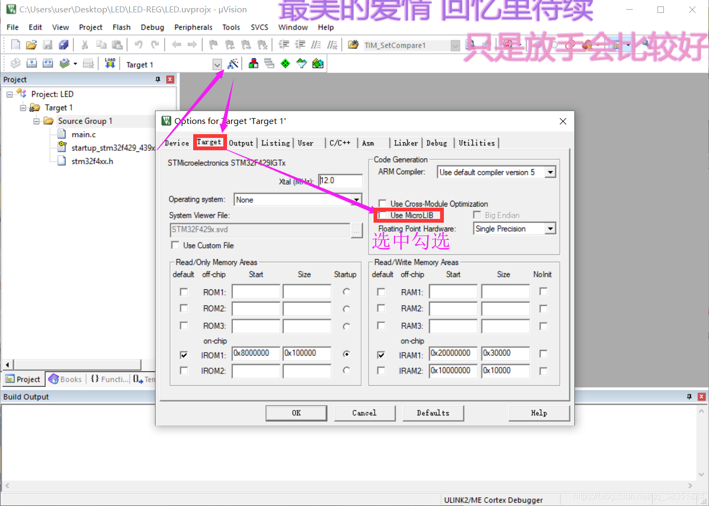
Output 选项卡：把输出文件夹定位到工程目录下的 Output 文件夹；若想在编译过程中生成 hex 文件，勾选 Create HEX File：
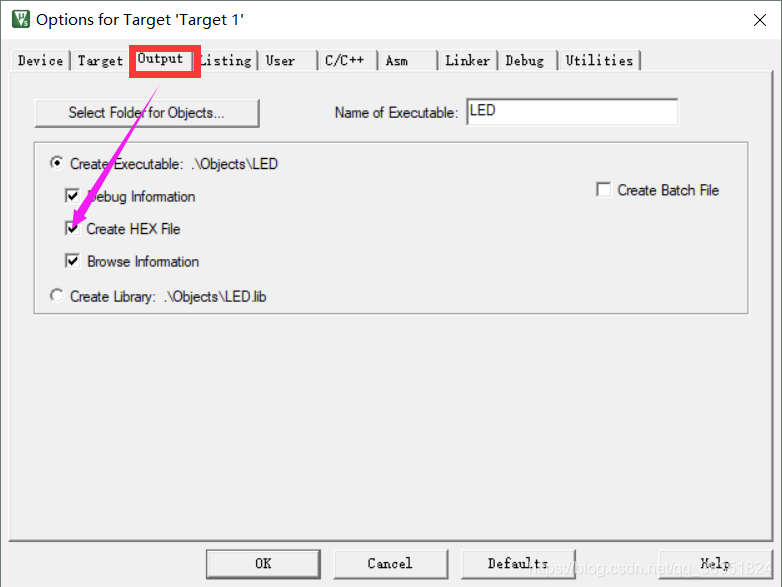
Listing 选项卡：把输出文件夹定位到工程目录下的 Listing 文件夹：
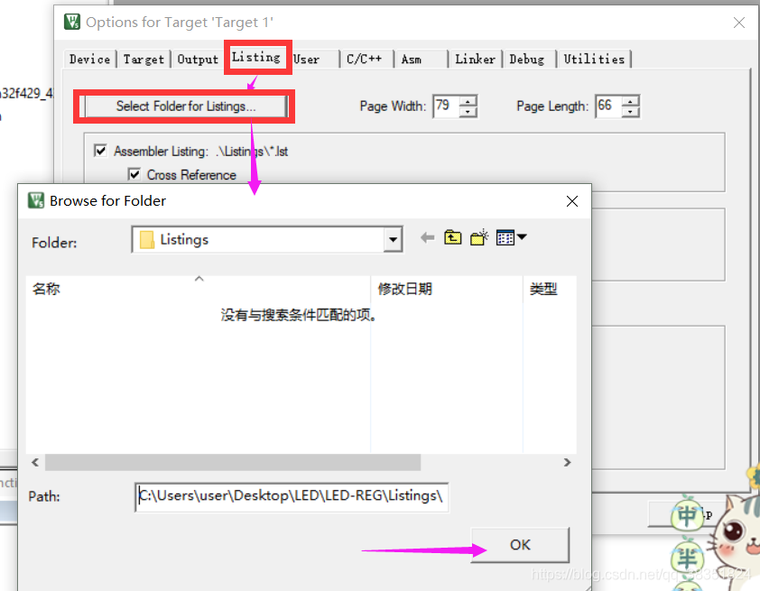
下载器配置（在仿真器连接好电脑和开发板、且开发板供电正常的情况下进行）：Debug 选项卡中选择所用的仿真器型号：
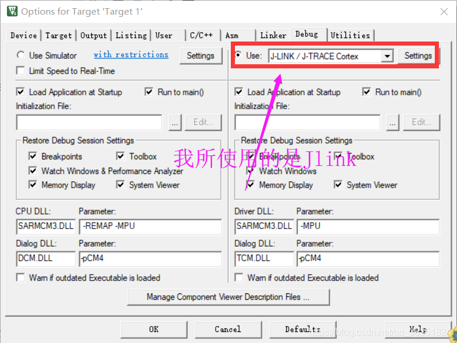
Utilities 选项卡：选择仿真器下载方式：
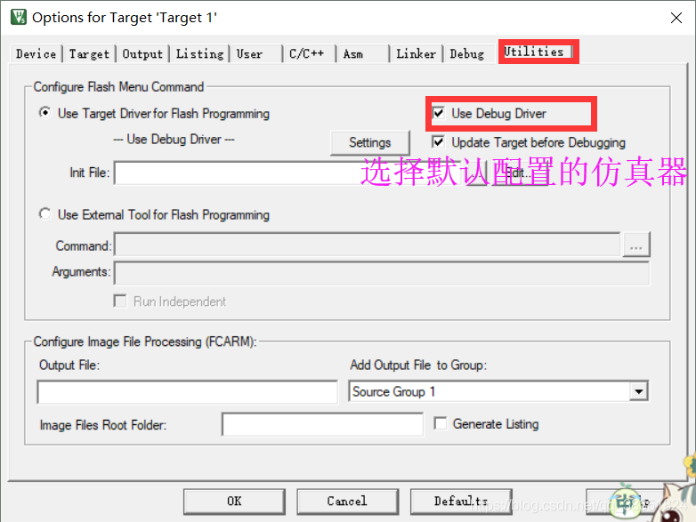
点击 Debug 选项卡的 Settings 进入仿真器设置：Port 选择 SW 接口并设置速度；仿真器连接了电脑和开发板且开发板已供电时，会自动识别到芯片（SWDIO 显示 IDCODE）：
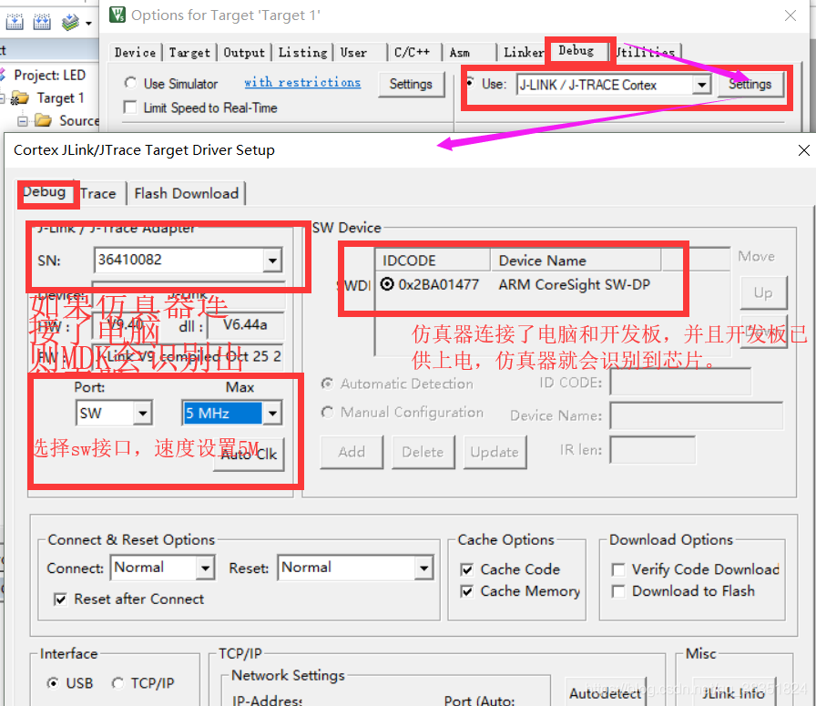
在 Flash Download 配置中选择目标板：FLASH 大小根据板子上的芯片型号决定，F429 选 1M（不添加编程算法会出现 Algorithm 错误）；小技巧：勾选 Reset and Run，程序下载完后自动运行，否则需要手动复位；擦除方式选择 Erase Sectors 即可，不要选 Erase Full Chip，否则下载会比较慢：
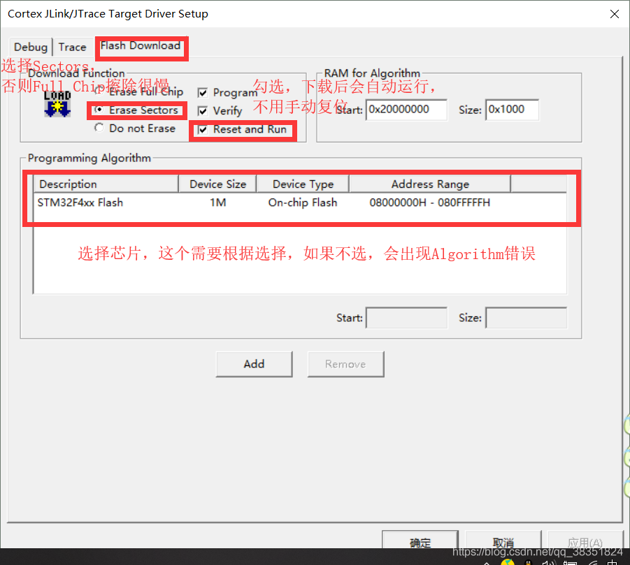
Target 选项卡中选择编译器版本（AC5 或 AC6），两者对比：
| 对比项 | AC5 | AC6 | 说明 |
|---|---|---|---|
| 中文支持 | 较好 | 较差 | AC6 对中文支持极差，goto definition 无法使用、误报等 |
| 代码兼容性 | 较好 | 较差 | AC6 对某些代码优化可能导致运行异常，需慢慢调试 |
| 编译速度 | 较慢 | 较快 | AC6 编译速度比 AC5 快 |
| 语法检查 | 一般 | 严格 | AC6 语法检查非常严格，代码严谨性较好 |
选择编译器的方法：在 Target 选项卡中选择 AC5 或 AC6；若选 AC6，还需在 C/C++ 选项卡的 Misc Controls 中设置 -Wno-invalid-source-encoding，以关闭对汉字的错误警告，AC5 则无需设置。
设置头文件包含路径时涉及绝对路径与相对路径：绝对路径是从盘符开始的完整路径，可直接到达目标位置；相对路径是由某个文件所在路径引起的与其它文件（夹）的路径关系。关于相对路径，记住 3 点：
1，默认路径指 MDK 工程所在路径，即 .uvprojx 文件所在文件夹；
2，"./"表示当前目录（也可写作".\"）；
3，"../"表示当前目录的上一层目录（也可写作"..\"）。
2.5 添加main.c并编写代码
新建一个文件，命名为 main.c，保存在 User 文件夹下，并添加到 User 分组，然后编写用户代码。
3 下载验证
如果前面步骤都成功了，接下来就可以把编译好的程序下载到开发板上运行（了解级别）。下载程序不需要其他额外的软件，直接点击 KEIL 工具栏中的 LOAD 按钮即可：
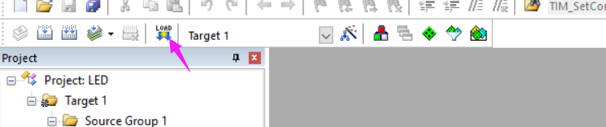
程序下载后，Build Output 选项卡如果打印出 Application running... 则表示程序下载成功；如果没有出现实验现象，按复位键试试。由于工程模板还没有编写程序，开发板不会有任何现象，属正常情况。
进一步验证：打开 XCOM 串口助手，选择开发板 CH340 对应的串口号，波特率设置为 115200，即可看到程序持续输出的计数信息，说明寄存器版本工程建立成功、运行正常。
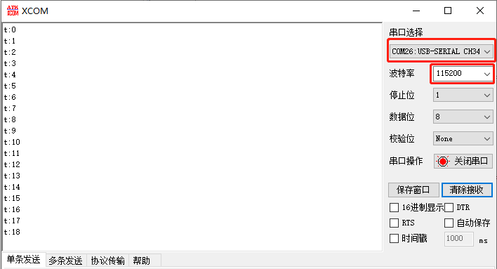
4 课堂总结
本讲内容回顾（详细脑图见课件"新建寄存器版本MDK工程（课堂总结）.pdf"）：
1，新建工程前的准备工作（了解）：下载 STM32Cube 官方固件包、搭建开发环境；
2，新建寄存器版本MDK工程步骤（熟悉）：新建工程文件夹 → 新建工程框架 → 添加文件 → 魔术棒设置 → 添加 main.c 并编写代码；
3，下载验证（了解）；4，课堂总结（了解）。